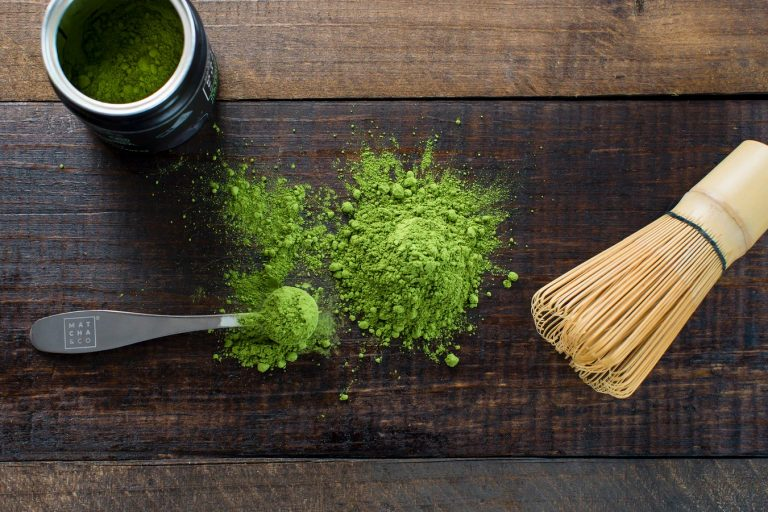

Matcha là “siêu nguyên liệu” trong ngành đồ uống. Vì Matcha có thể sáng tạo ra vô số những món khác nhau có vị ngon hấp dẫn. Cách làm Matcha Latte đơn giản giúp bạn có thể mua ngay nguyên liệu về làm tại nhà với vị ngon không khác gì quán cao cấp. Cùng xem nhé!
Giờ đây, dù đi đến bất kỳ quán nước nào bạn cũng sẽ thấy món Matcha Latte này. Matcha Latte là món đồ uống được sáng tạo và biến tấu từ cà phê Latte. Thức uống được kết hợp với sữa tươi chất lượng. Matcha Latte sử dụng nguyên liệu trà matcha thay cho cà phê nhằm tăng tính đa dạng. Ngoài ra, người ta còn mong muốn cung cấp cho thực khách món uống mới lạ, thơm ngon.
Đúng vậy! Matcha Latte du nhập vào Việt Nam và tạo nên cơn sốt thật sự. Bởi chúng sở hữu vị chát nhẹ, thơm lừng của matcha mà không có bất cứ nguyên liệu nào so sánh được. Cùng với đó là những lợi ích cho da, giảm cân và ngăn ngừa mụn khiến món uống này càng được phái đẹp ưa chuộng hơn. Đây là một lựa chọn thích hợp cho những ai không thích uống cà phê.
Matcha Latte tuy khó mà cực kỳ dễ làm. Đây là thức uống nhiều người e ngại không thể thực hiện món uống này. Tuy nhiên, chỉ với công thức đặc biệt của Teashop bạn có thể thực hiện ngay tại nhà!
Với cách làm đơn giản này bạn đã có 1 ly nước Matcha Latte thơm ngon, béo ngậy. Nếu bạn là người hảo ngọt, có thể tăng thêm lượng nước đường lên khoảng 20ml. Đồng thời có một lưu ý nho nhỏ là bạn không nên rắc quá nhiều bột matcha. Vì điều này sẽ khiến người uống cảm thấy khó chịu hoặc sặc.
Ⓒ Copyright by CLOWNS